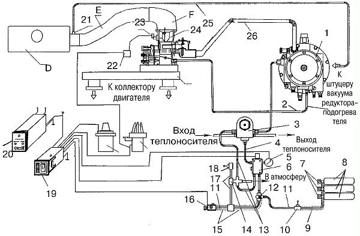
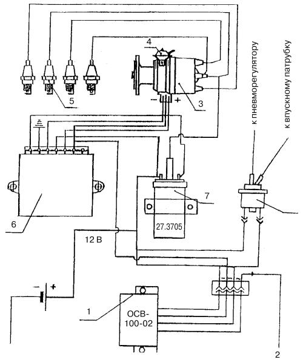
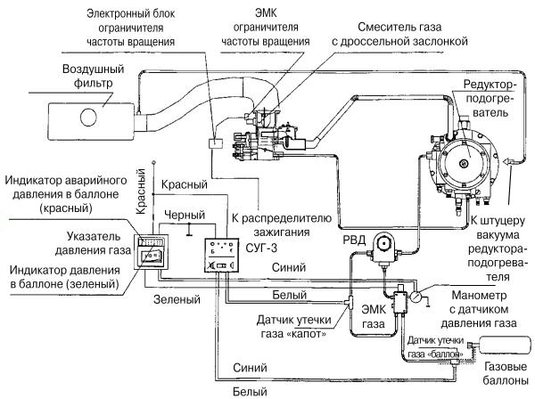
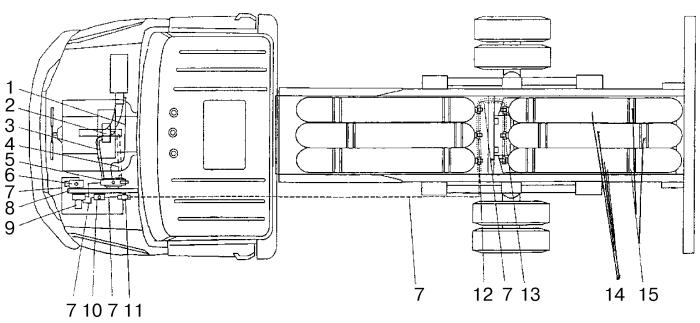

Устройство системы АГТС «САГА-7Б».
Рассмотрим устройство и принцип работы оборудования этой системы, принципиальная схема которой представлена на рис. 27, схема системы зажигания на рис. 28, а электрическая схема – на рис. 29.

Рис. 27. Принципиальная схема работы АГТС «САГА-7Б»: 1 – редуктор-испаритель низкого давления; 2 – вакуумный шланг; 3 – редуктор высокого давления; 4, 11 – трубопроводы высокого давления; 5 – датчик высокого давления с манометром; 6 – газовый электромагнитный клапан высокого давления; 7 – баллонные вентили; 8 – газовые баллоны; 9, 15 – гофрированные шланги; 10, 18 – датчики утечки газа (Б – багажник, К – капот); 12 – магистральный вентиль; 13, 17 – дренажные шланги; 14 – штуцер с пятью выходами; 16 – заправочное устройство; 19 – переключатель вида топлива с указателем давления газа; 20 – сигнализатор утечки газа (клемма Б и соответствующая сигнальная лампа – утечка в багажнике, клемма К и соответствующая сигнальная лампа – утечка под капотом); 21 – штуцер вакуумного канала; 22 – электронный блок ограничителя частоты вращения; 23 – электромагнитный клапан ограничения частоты вращения; 24 – смеситель газа с дроссельной заслонкой; 25 – вакуумный шланг; 26 – шланг низкого давления; А – впускной трубопровод; D – воздушный фильтр; E – патрубок подачи воздуха; F – подводящий уголок; B – катушка зажигания; C – датчик-распределитель зажигания.

Рис. 28. Схема системы зажигания: 1 – электронный блок системы ограничения частоты вращения; 2 – клапан; 3 – датчик-распределитель; 4 – вакуумный регулятор; 5 – свечи зажигания; 6 —одноканальный коммутатор; 7 – катушка зажигания.

Рис. 29. Электрическая схема «АГТС САГА-7Б».
Система обеспечивает дозированную подачу газа в двигатель во всех режимах работы.
Компримированный природный газ хранится на автомобиле в баллонах (8) (см. рис. 27) высокого давления. Металлический корпус баллона покрыт армирующим слоем из стеклопластика, что повышает его прочность и снижает массу за счет уменьшения толщины стенок. На внутреннюю поверхность баллона нанесено покрытие для защиты от коррозии. В каждый баллон ввернут вентиль (7). Вентили баллонов соединены трубопроводом высокого давления (11). Отрезок трубопровода, проходящий под рамой автомобиля, соединяет все вентили баллонов с магистральным вентилем (12). Аналогичными трубопроводами баллоны соединены с газовым электромагнитным клапаном высокого давления (6), редуктором высокого давления (3) и редуктором-испарителем (1) низкого давления. Газовый электромагнитный клапан, редуктор высокого давления и редуктор-испаритель низкого давления размещены в отсеке двигателя. Вентиль подачи газа (12) и заправочное устройство (16) расположены с левой стороны автомобиля за кабиной водителя.
Трубопровод высокого давления между баллонами и магистральным клапаном заключен в гофрированный шланг (9), в котором установлен датчик (10) утечки газа из баллонов. В гофрированном шланге (15), внутри которого проходит трубопровод, соединяющий заправочное устройство с магистральным вентилем, помещен переходник для подключения датчика (18) утечки газа в подкапотном пространстве.
Газовый электромагнитный клапан (6) соединен с редуктором высокого давления (3) трубопроводом высокого давления (4). Редуктор высокого давления присоединен к редуктору-испарителю низкого давления (1) трубопроводом высокого давления. Рукав (26) низкого давления связывает редуктор-испаритель со смесителем газа (24).
Для установки смесителя СГ-250 необходимо изготовить новый впускной трубопровод. Его изготавливают из стальной прямоугольной трубы. Он имеет два фланца для крепления к впускному трубопроводу головки блока цилиндров, а также фланец для монтажа смесителя газа.
Датчики утечки газа (10) и (18) подключены к блоку индикации утечки (20), установленному на панели приборов кабины. В случае утечки газа, в зависимости от места утечки, на лицевой панели индикатора загораются красные мигающие светодиоды под надписями «Баллон» или «Капот», и подается прерывистый звуковой сигнал, оповещающий водителя об утечке газа.
Манометр-датчик (5), рассчитанный на давление газа 25 МПа, соединен с индикаторным указателем давления газа, смонтированным в переключателе вида топлива (19), который установлен в кабине на панели приборов.
В корпусе заправочного устройства (16) установлен датчик блокировки пуска двигателя, который соединен с коммутатором переключателя вида топлива. При вынутой заглушке заправочного устройства пуск двигателя невозможен.
Газовый электромагнитный клапан (6) посредством штуцера (14) с пятью выходами соединен с датчиком утечки газа (18) через дренажные шланги (17) и (13). В случае утечки из-под основных уплотнений газового клапана газ по дренажному шлангу выводится за пределы отсека двигателя.
По шлангу (2) к редуктору-испарителю (1) из дроссельного пространства передается управляющее разрежение.
При разработке системы «САГА-7Б» для автомобиля ЗИЛ-5301 и его модификаций предприняты все меры, обеспечивающие герметичность системы на весь срок эксплуатации. В газовой магистрали применены трубопроводы, изготовленные из нержавеющей стали, с заводской развальцовкой концов. Гайки и ниппели «авиационной» конструкции выдерживают многократный демонтаж и сборку.
Если повреждена диафрагма первой ступени редуктора-испарителя, газ не попадет в отсек двигателя. Поступление газа в систему охлаждения двигателя также исключено. Если возникает утечка газа в каком-либо соединении, газ не попадает в подкапотное пространство, а отводится наружу по дренажным шлангам (13) и (17). Когда утечка происходит в магистральном вентиле (12), электромагнитном клапане (6) или редукторе высокого давления (3), газ проходит через датчик утечки (18), и на блоке индикации утечки (20) загорается светодиод под надписью «Капот». B случае утечки в соединениях баллонных вентилей (7) и в трубопроводе высокого давления (11) газ пройдет через датчик (10) и загорится светодиод под надписью «Баллон». В обоих случаях прозвучит прерывистый предупреждающий звуковой сигнал.
В дизельной системе питания задействованы следующие штатные элементы: воздушный фильтр (D), выпускной трубопровод (Е), подводящий угловой патрубок (F). Дополнительно устанавливаются: катушка зажигания (В), датчик-распределитель зажигания (С), а также электронный блок, ограничителя частоты вращения (22), электромагнитный клапан ограничения частоты вращения (23), штуцер вакуума (21) и вакуумный шланг (25).
При работе газобаллонной установки газ из баллонов (8) через вентиль (7) по трубопроводу (11) и магистральному вентилю (12) поступает в газовый электромагнитный клапан (6) с фильтром. Здесь газ очищается от механических примесей и поступает в редуктор высокого давления (3), прогретый теплоносителем системы охлаждения двигателя. В редукторе (3) давление газа понижается до величины, необходимой для нормальной работы редуктора-испарителя (1). Далее установка работает по той же схеме, что и системы для сжиженного нефтяного газа.
Доработка деталей и узлов двигателяДоработка деталей и узлов двигателя ММЗ-245.12, а также изготовление оригинальных деталей для его переоборудования в газовый двигатель с зажиганием от искры осуществляются по чертежам ООО «ВНИИГАЗ».
Отверстия под распылитель в головке цилиндров дорабатываются с целью установки искровых свечей зажигания. В доработанные каналы заворачиваются свечи зажигания с резьбой M12х1,25, длиной резьбовой части 19 мм и размером шестигранника под ключ 16 мм.
Дорабатывается камера сгорания (поршень) с целью увеличения ее объема для снижения степени сжатия. Объем камеры выбран из условия получения заданной степени сжатия. С учетом объема в надпоршневом пространстве, образованном прокладкой головки цилиндров, объемов в выточках под клапаны и кармане свечи в головке, степень сжатия в двигателе составляет S= 12.
Бесконтактно-транзисторная система зажигания, схема которой приведена на рис. 28, применяется на двигателе, переоборудованном под газовое топливо в комплектации со следующими элементами. Электронный блок ограничения частоты вращения (1); электромагнитный клапан (2); доработанный датчик-распределитель (3) (40.3706) с вакуумным регулятором (4); искровые свечи зажигания (5) (BOSCH Y6DC); одноканальный коммутатор (6) (76.3734); одновыводная маслонаполненная катушка зажигания (7) (27.3705); жгут низковольтных проводов с клеммными колодками для соединения датчика-распределителя, коммутатора и катушки зажигания; жгут из пяти проводов высокого напряжения (центральный провод и четыре провода на свечи зажигания).
Общий вид расположения оборудования на автомобиле показан на рис. 30.

Рис. 30. Принципиальная схема монтажа АГТС «САГА-7Б» на автомобиль ЗИЛ-5301 «Бычок»: 1, 3, 4, 13 – рукава; 2 – смеситель газа с дроссельной заслонкой; 5 – редуктор-подогреватель; 6 – вентиль магистральный; 7 – трубопроводы; 8 – кронштейн крепления агрегатов в моторном отсеке; 9 – редуктор высокого давления; 10 – клапан электромагнитный газовый высокого давления; 11 – заправочное устройство; 12 – вентили баллонов; 14 – баллоны; 15 – хомуты.